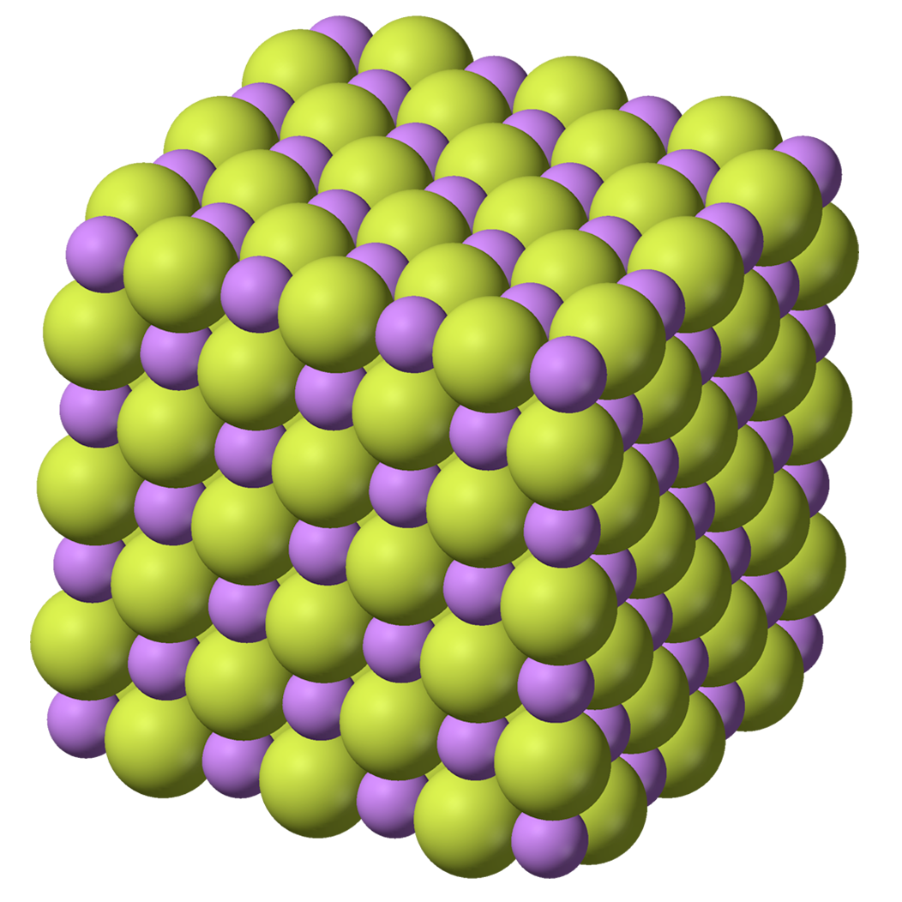

DIAGRAMS AS ART
These are diagrams that I think are art-works (or like art) in their own right. It could be argued that the relationship between a diagram and its real world referent is the same that exists between an artwork and it's referent. Some are simply beautiful; some, like great art, make you rethink the real world by making visible that which we cannot naturally see or by exposing relationships that are usually obscured.
Chemical Structures of Pharmacological & Psychotropic Agents:
3 Different Models of Lysergic acid diethylamide (LSD)
Lithium Flouride:
β-2 Adrenergic Receptor:
An important G-protein-coupled-receptor that binds to epinephrine (adrenaline). This receptor is found throughout the body and mediates, among other things, smooth-muscle relaxation and bronchodilation. Look at the colors on this one! And the shapes!